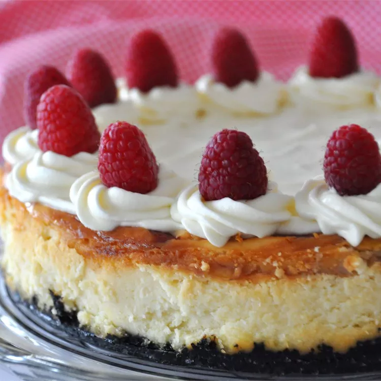

This white chocolate raspberry cheesecake is excellent and similar to one you would get in a restaurant. Great for special occasions. Garnish with white chocolate curls if desired.
Recipe by | Updated on December 1, 2022
Ingredients
Crust:
Sauce:
Cheesecake:
Directions
Make crust: Mix together cookie crumbs, melted butter, and sugar in a medium bowl. Press mixture into the bottom of a 9-inch springform pan.
Make sauce: Combine raspberries, water, sugar, and cornstarch in a saucepan. Bring to a boil and continue boiling until sauce is thick, about 5 minutes. Strain through a mesh strainer to remove seeds.
Preheat the oven to 325 degrees F (165 degrees C).
Make cheesecake: Melt white chocolate chips with half-and-half in a metal bowl over a pan of simmering water; stir occasionally until smooth.
Mix together cream cheese and sugar in a large bowl until smooth. Beat in eggs one at a time. Blend in vanilla and melted white chocolate mixture. Pour 1/2 of the batter over crust. Spoon 3 tablespoons raspberry sauce over batter. Pour remaining cheesecake batter on top. Spoon 3 tablespoons raspberry sauce over batter. Swirl batter with the tip of a knife to create a marbled effect.
Bake in the preheated oven until filling is set, 55 to 60 minutes. Cool cheesecake at room temperature, then cover with plastic wrap and refrigerate until thoroughly chilled, 8 hours to overnight.
Remove cheesecake from the pan and serve with remaining raspberry sauce.
Editor's Note:
Please note the difference in total time when following the magazine version of this recipe.
Nutrition Facts (per serving)
Reviews